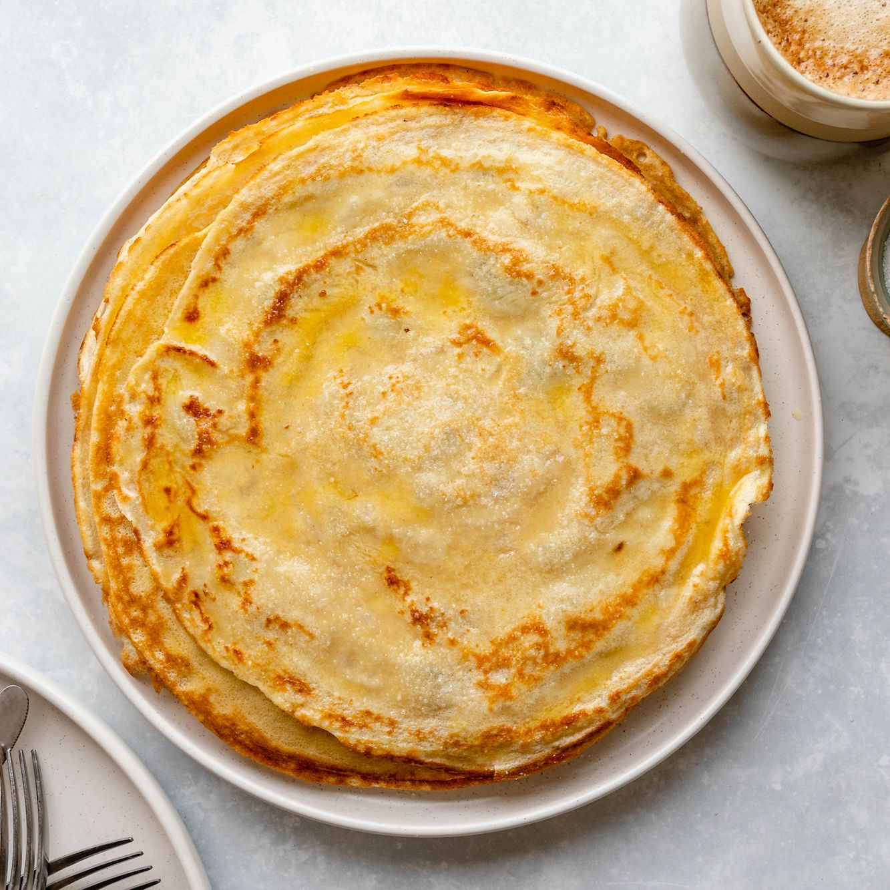

Malawax

Description
Unlike the thick and flaky Yemeni malawah (or malawach), the malawax (pronounced ma-la-wah) that is popular in Somalia and across the Somali diaspora is thin and closer in texture to a crepe. Delicate and sweet, malawax is cooked on each side, resulting in a beautiful caramelized pattern with crispy edges that are the stuff of dreams. But that is where the similarities end: These sweet, tender crepes are bursting with the flavors of cardamom and ghee. They can be enjoyed as a snack, with coffee or tea, or as a fragrant addition to your brunch rotation.
Ingredients
- 1⅓ cups/176 grams all-purpose flour
- 1 cup/240 grams whole milk or milk of choice
- 1 large egg
- ¼ cup/50 grams granulated sugar, plus more for serving
- 1 teaspoon ground cardamom
- ⅛ teaspoon salt (preferably fine sea salt)
- Melted ghee, as needed
Steps
- In a blender, combine the flour, milk, egg, sugar, cardamom and salt. Add 1 cup water and blend until smooth. Transfer to a big bowl and grab a ladle.
- Using a paper towel, lightly grease a medium nonstick crepe pan, nonstick skillet or cast-iron griddle with melted ghee and place over medium-high heat until well heated. Ladle about ⅓ cup batter into the pan and gently swirl to evenly distribute the batter into a thin round. If using a heavier cast-iron griddle, lightly distribute the batter to cover the bottom of the pan using a ladle. Cook for about 1 to 2 minutes until batter is no longer runny and bottom is brown or until malawax releases easily from the pan with a spatula.
- Just before flipping the malawax, drizzle it with ½ teaspoon melted ghee. Flip the malawax and cook on the second side for about 20 to 30 seconds, or until the edges get crispy and small, golden pockets appear all over the malawax. Flip the malawax onto a plate and sprinkle with your desired amount of sugar.
- Repeat this process with each malawax until the batter is finished and you have a stack of malawax. Don’t forget to distribute ghee in the pan evenly with a paper towel as needed between each malawax. Malawax is best eaten right away while it’s warm and the edges are still crisp.
Home